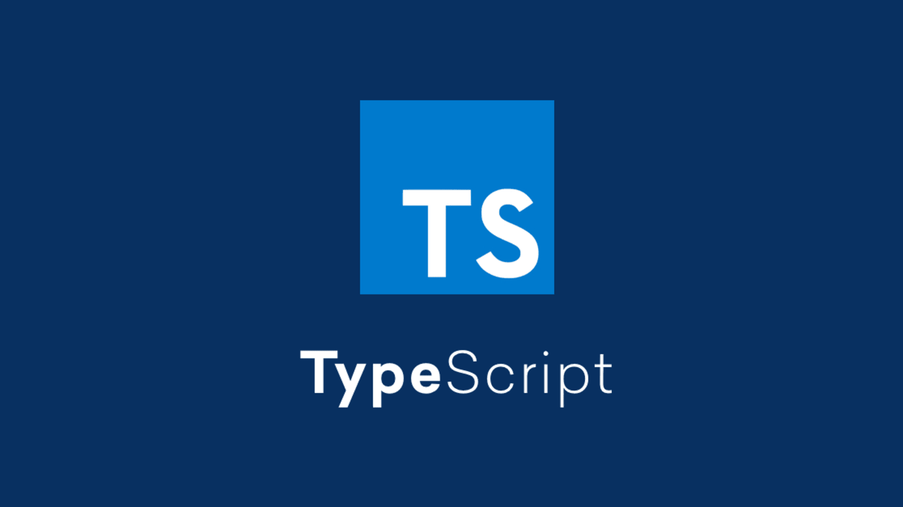

TypeScript
TypeScript is a statically typed superset of JavaScript that adds static typing and other advanced features to the language. It allows developers to catch errors during the development process, as the type system provides compile-time checks that help identify potential issues before the code is executed.
TypeScript enhances JavaScript's capabilities by introducing concepts such as interfaces, classes, modules, and generics, enabling developers to write more robust and maintainable code. With its increasing popularity in the web development community, TypeScript has become a go-to choice for large-scale applications, as it offers better tooling support, improved code readability, and easier code navigation.
Advantages
Static typing for catching errors early
Enhanced tooling support and productivity
Improved code readability and maintainability
Seamless integration with existing JavaScript codebases
Better code organization through modules and namespaces
Easy adoption and gradual migration from JavaScript
Rich ecosystem and community support
Enables the use of modern JavaScript features before they are widely supported
Disadvantages
Steeper learning curve.
Potential increased development time due to strict type checking.
Increased complexity compared to JavaScript.
Additional overhead for type annotations and compilation.
Limited interoperability with some JavaScript libraries.
Requires additional tooling and setup for development.
Potential compatibility issues with older JavaScript codebases.